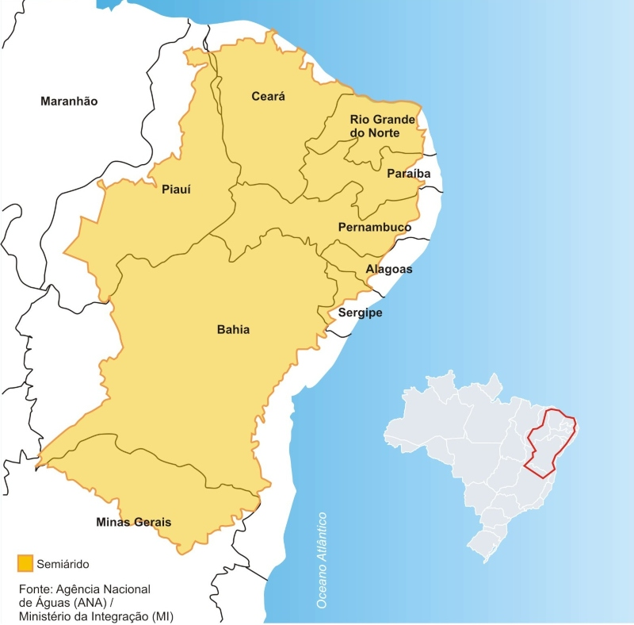
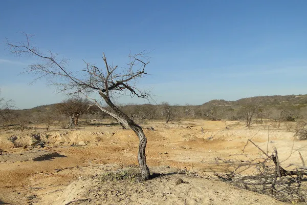
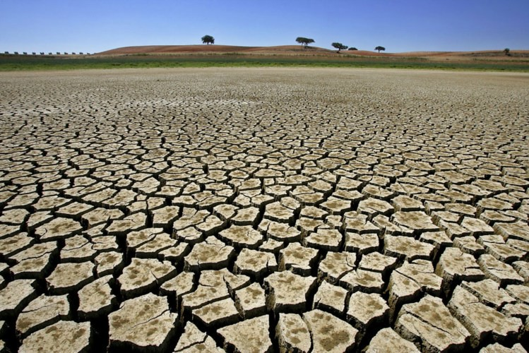
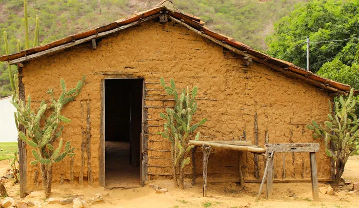

Vidas Secas: do ponto de vista da Geografia...
O Espaço e a Paisagem como Protagonistas
A Geografia e a Literatura caminham juntas em Vidas Secas para revelar que o espaço geográfico não é apenas um cenário passivo, mas um elemento que molda o comportamento e a identidade humana. Através da narrativa, o leitor é transportado para uma realidade onde a análise da paisagem — composta por planícies avermelhadas, rios secos e terra rachada — permite identificar tanto fenômenos físicos visíveis quanto as estruturas sociais invisíveis que oprimem o sertanejo.
O centro dessa dinâmica é o Bioma Caatinga Caatinga: Do tupi "mata branca". Bioma exclusivamente brasileiro com vegetação xerófila adaptada à escassez hídrica. , uma formação tipicamente nordestina que Graciliano Ramos descreve com rigor. Mais do que um dado técnico, a caatinga atua como um "personagem carrasco": sua vegetação espinhosa e seu solo abrasador condicionam a luta psicológica de Fabiano e sua família, evidenciando como as condições do meio ambiente podem agravar o embrutecimento e a falta de opções do indivíduo.
Essa relação entre homem e meio é marcada por uma profunda ambivalência. Em épocas de estiagem prolongada, o sertão desperta sentimentos de horror e repulsa devido à escassez de recursos e à miséria social. No entanto, com a chegada das primeiras chuvas esse cenário é transformado, fazendo o verde brotar e renovando a esperança dos retirantes. Essa face da caatinga nos mostra que a hostilidade do sertão não é um destino biológico permanente, mas um fenômeno que exige projetos de convivência e políticas públicas eficazes.
Por fim, a migração retratada na obra, através dos capítulos "Mudança" e "Fuga", ilustra fluxos populacionais forçados pela necessidade de sobrevivência. Fabiano e sua família não se movem por escolha, mas empurrados por um sistema que une o rigor do clima semiárido à exploração do trabalho. Entender Vidas Secas pela Geografia é, portanto, compreender as lógicas de poder que utilizam a seca como instrumento de exclusão social.
Atlas Visual do Semiárido

A diversidade da Caatinga, bioma que alterna entre o cinza da seca e o verde das chuvas.
Fonte: IHU Unisinos.

A planície avermelhada descrita por Graciliano, onde a vegetação xerófila resiste ao sol.
Fonte: Mundo Educação.

Solo rachado pela estiagem, refletindo a aridez que escalda os pés dos retirantes.
Fonte: FBMC.

Habitações rústicas de barro, comuns no interior do semiárido brasileiro.
Fonte: Mundo Educação.
Exploração Geográfica em Vídeo
Para complementar sua visão sobre a riqueza e os desafios do sertão, recomendamos o documentário da TV PUC-Rio. O canal produz conteúdos educativos de alto nível, fundamentais para a divulgação cultural e científica no Brasil. Este vídeo ajudará você a visualizar a fisionomia da caatinga citada por Graciliano.

Conteúdo Externo | Fonte: Canal TV-PUC-Rio.